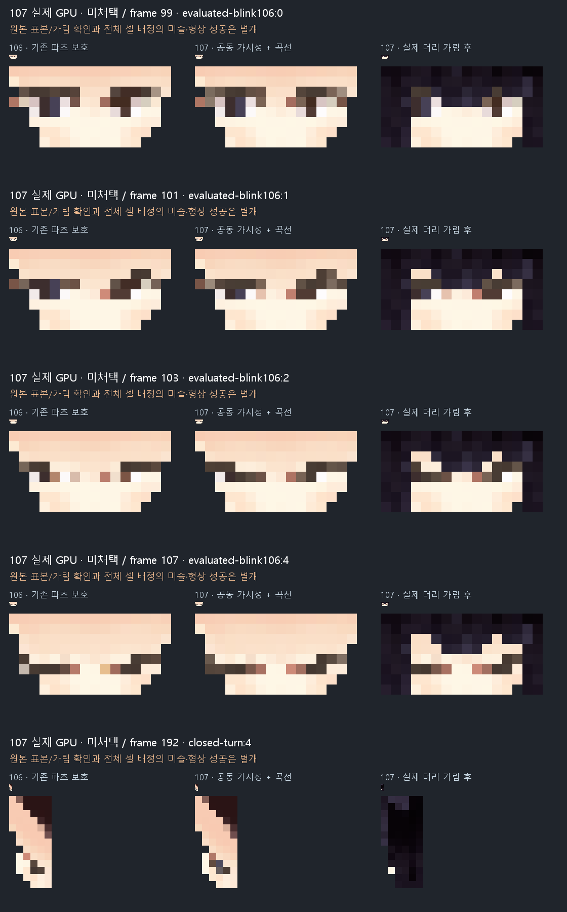
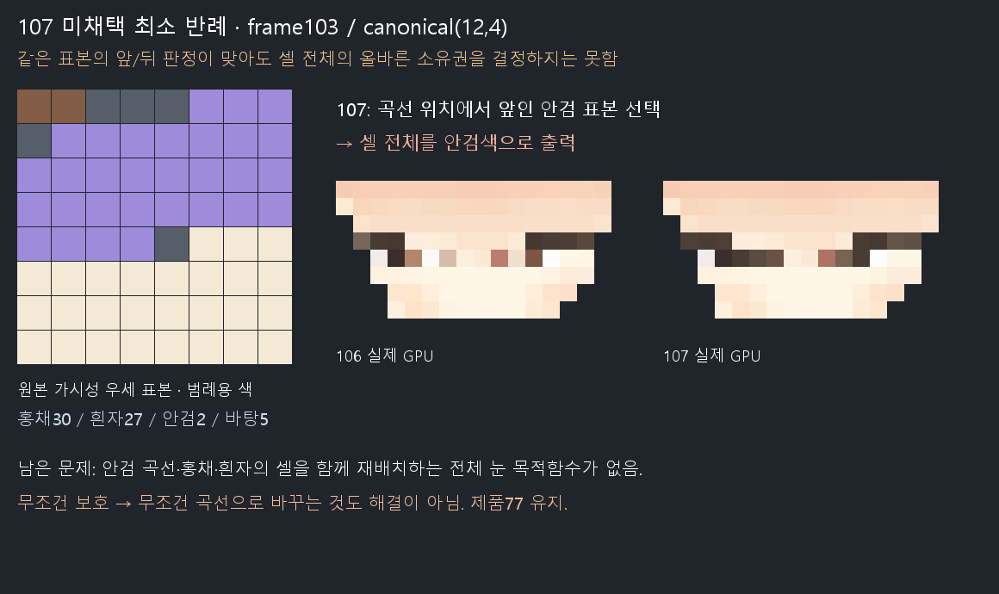
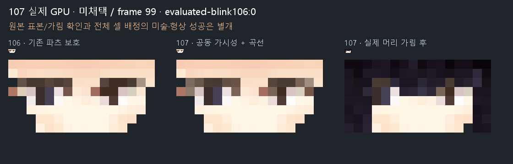
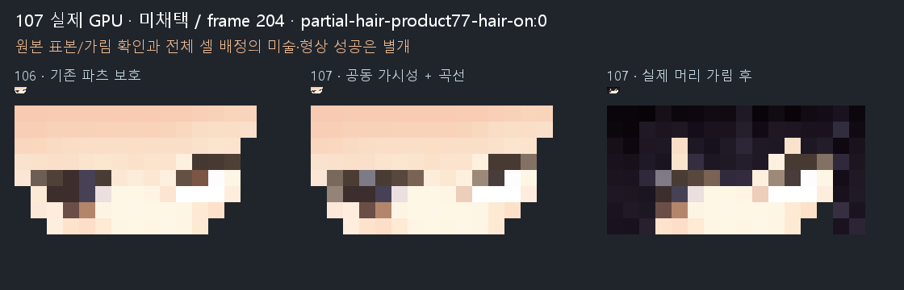

제품77 유지. 106의 홍채·흰자 무조건 보호를 제거하고, 곡선의 원본 표본 위치에서 세 파츠의 깊이/가시 기여를 함께 판정했습니다. 같은 프레임8× 표본에서 확인된 색소만 사용합니다. 6+2셀·최소 셀 수·포즈별 강제값·색 평균·최종×g는 없습니다.
최종1 Play에서 부분Close9, 열린 위상10/보행8/회전10, 닫힌 위상4/회전10, 부분Close의 실제 머리ON/OFF/복원3으로54상태를 캡처했습니다. 54연속 프레임 또는 실제 성능 영상이라는 뜻은 아닙니다. 정상 Present/history 경로이며 실제 GPU 선택 결과입니다.
| 검사 | 결과 |
|---|---|
| 동등성/출처 | 7,959셀 CPU/GPU 불일치0, 1,350 plane 동일 source/frame/serial. 홍채·흰자 원본 팔레트 밖0. |
| 표본화 손실 | frame101 (14,3)/(7,4)의4×0표본→8×2/1개, frame192(3,9)0→1개. 실제 색소/깊이로 출력했으며 발명한 연결색이 아님. |
| 측면 가림5셀 | 같은 프레임의 현재 삼각형/UV/행렬로157 ray 증거 재계산. 모두 앞쪽 얼굴과 불투명 alpha bound. depth 오차최대2.3352e−6, UV오차1.7892e−6. |
| 머리 ON/OFF | OFF의 머리 표본0, 최종색=눈 합성색. ON복원 눈RGBA/owner 정확히 동일. 최종19픽셀 RGB8 차이는 변한 머리 입력RGB에서 왔으며 메타/owner는 같음. |
| 위상/재개방 | 실측0~1px. 열린10/닫힌4 상태 각각shape ID1종 및RGB8 변화0. 재개방 RGBA/owner 원상태 동일. 전체 시간 안정성 보장 아님. |
| 미통과 | 곡선 표본의 가시성은 전체 셀의 소유권을 유일하게 정하지 못함. 열린 홍채9→6, 부분Close50에서 한쪽 홍채0; 곡선·홍채·흰자의 전체 공동 재배치는 아직 없음. 일부 분절도 남음. |


보기 시간을 늘린 상태별 미리보기이며 실제FPS/성능 영상은 아닙니다.


첫 실행은 HLSL bool 복합대입 컴파일 오류로0캡처 후 정상 종료했고, 이후 전9커널 IsSupported/group 검사를 추가했습니다. 중간4× 공동판정51상태는 확보했지만 머리관찰기 사전검사에서 종료했습니다. 최종은54상태/정상 종료입니다. 과거 오류9개는 Console에 남았지만 최종 실행의 신규 오류는0입니다. shader integer-divide 성능 경고1개가 있고 실제GPU 시간을 측정한 결과가 아닙니다.
마지막20:40:11UTC Edit/scene clean/dirty31 동일, 가능한 직렬화46개·입력 동일 객체22값/장치·옵션/time/pipeline/globals 복원. 임시 AssetImporter1개 unavailable. 보호32파일·기존 사용자30변경 유지, RT30→30. GetTotalAllocatedMemoryLong +35,825,685bytes(+34.17MiB), 물리WS/누수 확정값 아님. 신규C# Assets import·광범위 저장·CUA·삭제·초기화·강제종료·push는 없습니다.
새 Unity 자산은 격리 ForwardEye107.compute와.meta뿐입니다. 외부C# adapter/관찰기는 제품 기본77을 바꾸지 않습니다. native 안검 유한 팔레트·외곽선·얼굴/두피/볼 영역화는 미완이며 UV 임계값 탐색은 추가하지 않았습니다.
실제 GPU 판정 · 셀별 source 기여·트레이드오프 · 독립 ray 근거 · 복원/색차 · 원시 자료 해시 · 최종54+중간2 focus packet